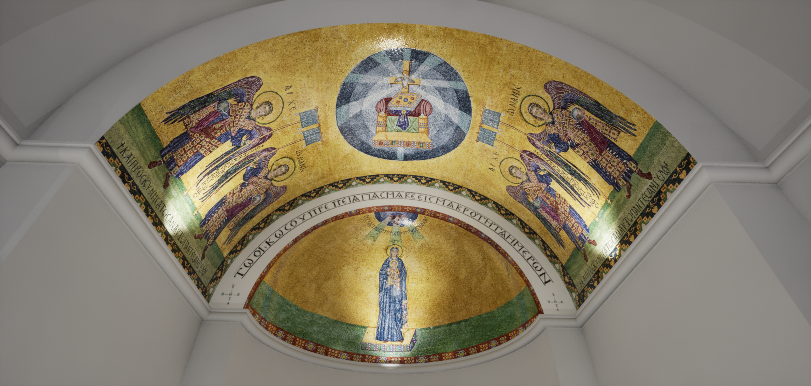
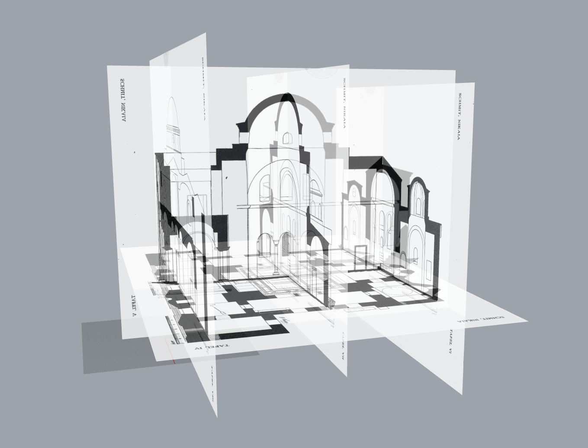
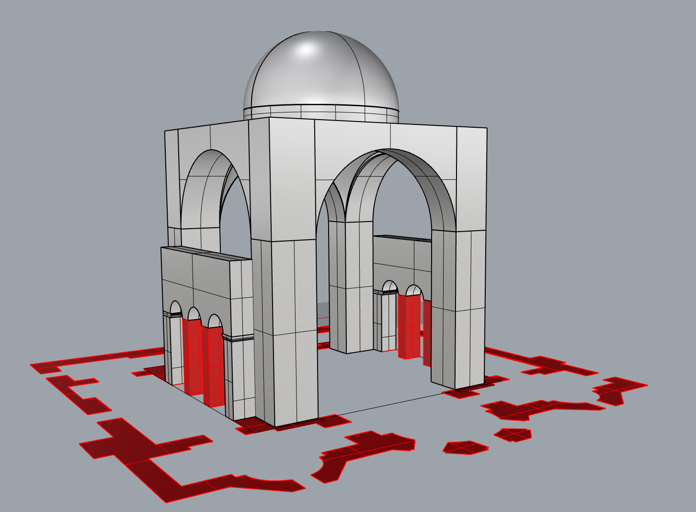
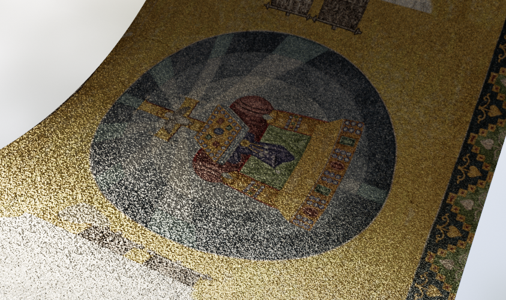
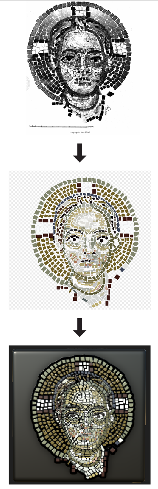
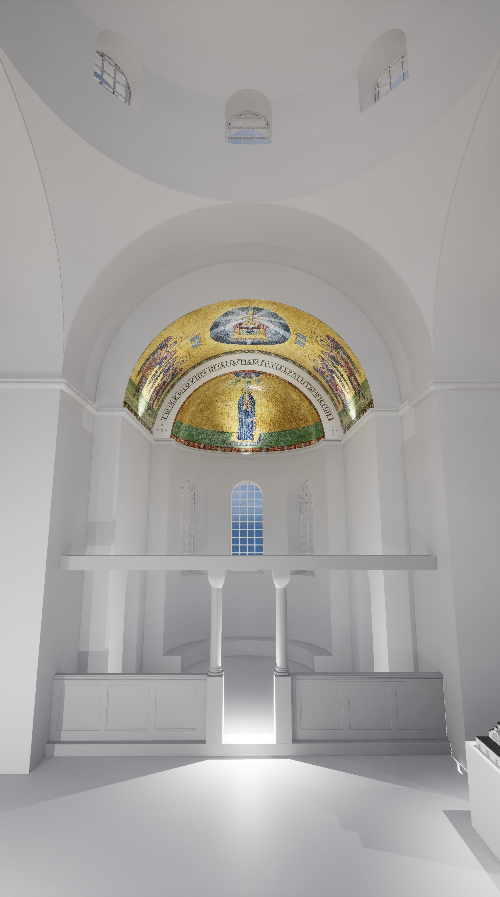

Koimesis XR

The Koimesis Church in Nicaea, a significant Byzantine monument, was destroyed multiple times over the centuries and now exists only as fragmented remains. Physical restoration often reaches its limits, and here, digital reconstruction offers an innovative way to preserve and make knowledge of historical sites accessible, even in cases of complete loss. This work focuses on reconstructing the church's three main construction phases and creating detailed replicas of its original mosaics. The methodological approach includes 3D modeling in Rhino, texturing the mosaics in Substance Designer, and implementation in Unreal Engine.

Data and Information Collection
The study of the Koimesis Church was based on a thorough analysis of historical and archaeological sources. The key literature by Wulff, Schmit, and Peschlow formed the foundation of the research. These works were systematically evaluated and divided into construction phases to facilitate precise modeling. Mosaics and drawings were digitally integrated and textured to create a realistic representation.

Phase 1: Early Period (8th–9th Century)
In the 8th century, the church was built with characteristic features such as the templon, pillars, and capitals. The mosaics in the apse and bema were altered after 754 and later restored in the 9th century by Naukratios. [cf. J. Fildhuth (2024)]
Phase 2: High Middle Ages (1064–1067)
Following an earthquake in 1064, the dome and narthex collapsed. By 1067, they had been rebuilt with narrower side windows and an elevated narthex structure. Additionally, new mosaics were created in the naos and narthex. [cf. J. Fildhuth (2024)]
Phase 3: Modern Era (18th–Mid-19th Century)
In the mid-18th century, the dome and vaults of the apsidal side chambers collapsed. The main dome was reconstructed in 1809. In 1833/34, the interior was renovated, including the overpainting of mosaics and the repaving of the floor. By the mid-19th century, an enclosing wall and a bell tower had been added. [cf. J. Fildhuth (2024)]
3D Modeling
The church was modeled in Rhino according to its construction phases, based on archaeological findings and historical sources.
Technical Adjustments
Since architectural plans and scans exhibited irregularities due to earthquakes and subsequent reconstructions, the floor plans were straightened, and cracks were adjusted. The goal was to achieve a precise digital reconstruction without drawn distortions.

Reconstruction of Historical Architectural Details
n collaboration with the Archaeological Institute of Freiburg, comparable structures were analyzed to reconstruct missing details. Historical cracks and photographs were re-examined to ensure accuracy.

Modeling Process
As no complete remains of the church exist, the entire structure was modeled in 3D based on the documentation of Wulff, Schmit, and Peschlow. The process began with a patchwork model for spatial visualization. Subsequently, the model was divided into three construction phases to clearly represent its historical development. Missing details were supplemented through well-founded interpretations to create a scientifically accurate and visually realistic reconstruction.
Mosaic Design and Texturing
Using Substance Designer, textures were created to accurately replicate the original aesthetics of the mosaics. One of the main challenges was rendering a large-scale mosaic with spatial depth without generating excessive data that could impact VR applications. To address this, a physically based texture (PBR) was developed. By utilizing normal and height maps, three-dimensional effects such as light reflections and shadows were simulated—without requiring a complex 3D model.


Unreal Engine
An interactive application is currently being developed in Unreal Engine, allowing users to visit and explore the destroyed monument through its three construction phases. The application is designed to be accessible both as a web-based experience and in Virtual Reality (VR). Additionally, a suitable soundscape is planned to enhance immersion further.
